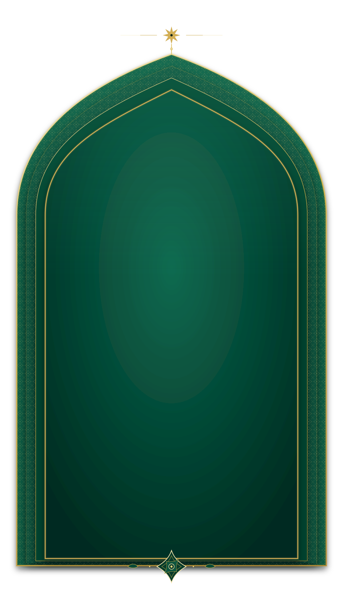

স্কিপ করে মূল কন্টেন্টে যান / Skip to main content
The Role of Ahl al-Bayt (a.s) — Islamic Knowledge Library

بِسْمِ ٱللَّهِ ٱلرَّحْمَٰنِ ٱلرَّحِيمِ
The Role of Ahl al-Bayt (a.s)
Islamic Knowledge Library
কুরআন, হাদিস ও আহলে বাইতের শিক্ষা থেকে
প্রামাণিক ইসলামিক জ্ঞান অর্জন করুন
إِنَّمَا يُرِيدُ اللَّهُ لِيُذْهِبَ عَنكُمُ الرِّجْسَ
أَهْلَ الْبَيْتِ وَيُطَهِّرَكُمْ تَطْهِيرًا
﴿ سورة الأحزاب ٣٣:٣٣ ﴾